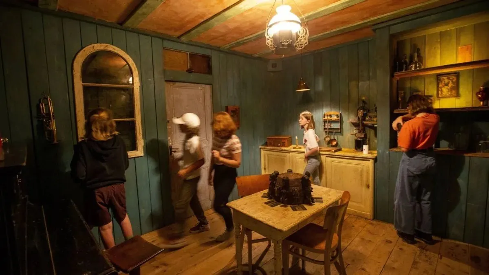
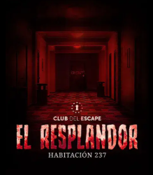

Escape Rooms en Buenos Aires: aventuras inolvidables para compartir con amigos
Las Escape Rooms son juegos de aventura en los que un grupo de personas es encerrado en una sala temática y debe resolver una serie de acertijos, enigmas y desafíos en un tiempo determinado —generalmente 60 minutos— para poder escapar. Son experiencias inmersivas que combinan lógica, trabajo en equipo, creatividad y, sobre todo, mucha diversión.
En los últimos años, las salas de escape se volvieron una de las actividades favoritas en Buenos Aires para realizar con amigos. ¿La razón? Permiten desconectar del día a día, potenciar la comunicación grupal y vivir emociones intensas en un entorno controlado. Cada sala tiene una ambientación distinta y un guion que atrapa desde el minuto uno.
Una de las más destacadas es la sala de Harry Potter de Escape Games, ubicada en el barrio de Núñez. Esta sala transporta a los jugadores al universo mágico con una ambientación impresionante y desafíos que giran en torno a hechizos, pociones y objetos encantados. Ideal para fanáticos del mundo mágico que quieren vivir su propio paso por Hogwarts.
Otra opción recomendada es “El Resplandor”, una sala de terror inspirada en la clásica película de Stanley Kubrick. Se encuentra en la empresa Club del escape y ofrece una experiencia intensa, no apta para miedosos. La atmósfera tenebrosa y los desafíos psicológicos hacen de esta sala una de las más comentadas de la ciudad.
Y por último, una joya reciente: “El Guardián de la Noche”. Esta sala fue una experiencia increíble que viví personalmente y la recomiendo muchísimo. La historia está muy bien construida, tiene giros inesperados y una ambientación que te atrapa por completo. Ideal para grupos con algo de experiencia que buscan una sala original, desafiante y súper entretenida.
Si estás buscando una actividad diferente, intensa y perfecta para compartir con amigos, una sala de escape es el plan ideal. ¡Animate a probar alguna de estas opciones y viví la aventura desde adentro!